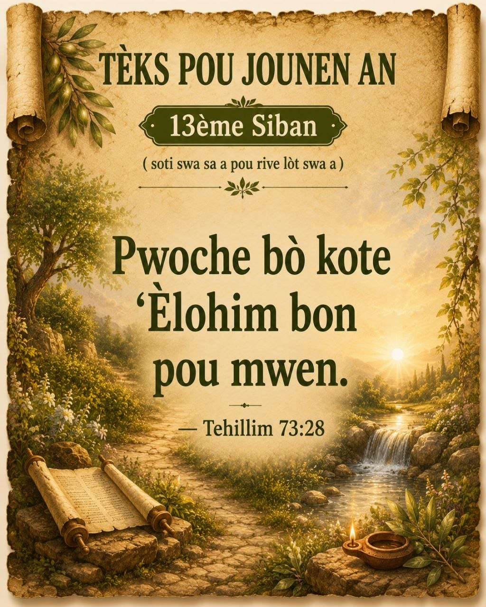

Texte du Jour · Dabar Ha'Yom
Chak jou, yon Pawòl nan Ketubim Qadoshim pou mache nan La Voie

✦ Jounen jodi a · Yom Ha'Zeh · Kalandriye Ibriy Restaure
Tehillim 73:28 · Ketubim Qadoshim
« Pwoche bò kote 'Èlohim bon pou mwen. »
« Mais pour moi, m'approcher de 'Èlohim est ce qui est bon. »
« Va·ani qirvat 'Èlohim li tov. »
✦ Archives — Tèks anvan yo
Yèsodi · Yè
Maʿasei 1:8
« Vous serez mes témoins — Edhim — jusqu'aux extrémités de la terre. »
Shiloshi · Anvan yè
Mattiyahu 28:19
« Allez, faites des tal'midim de toutes les nations... »
Revi'i · 3 jou pase
Tehillim 119:105
« Ta parole est une lampe à mes pieds, une lumière sur mon sentier. »
✦ Kontèks ak Meditasyon — Tehillim 73
— B'neiYah · Les Membres de La Voie
Tehillim 73 la se yon chante Asaf. Nan kòmansman chante a, Asaf te boulvèse paske li t ap gade moun mechan yo sanble ap reyisi pandan anpil moun k ap chèche fè sa ki dwat ap soufri. Sa te fè l poze kesyon sou jistis ak sou valè yon mòd devi ki rete atache ak Yahawah.
Pandan l t ap reflechi sou sitiyasyon sa a, li te vin konprann siksè moun mechan yo pa dire pou toutan e objektif Yahawah pou moun ki rete atache ak Li pi gran lontan pase avantaj tanporè yo. Se apre refleksyon sa a li rive nan konklizyon sa a : « Pwoche bò kote 'Èlohim bon pou mwen. »
Pawòl sa yo montre Asaf te konprann pi gwo byen yon moun kapab genyen se pa richès, pouvwa oswa popilarite, men yon relasyon sere avèk Yahawah. Menm lè sikonstans yo pa toujou fasil, pwoche bò kote Yahawah toujou pote benefis ki depase tout lòt bagay.
Aplikasyon pratik pou Les Membres de La Voie :
Gen moman kote yon tal'mid kapab wè moun ki pa enterese nan Dabar Yahawah a sanble ap reyisi pandan li menm ap travèse eprèv. Men, menm jan ak Asaf, li bezwen gade bagay yo avèk yon vizyon ki pi laj. Sa ki vrèman gen valè se pa sa yon moun posede, men relasyon l genyen ak Ha-Bôre a.
Pwoche bò kote Yahawah mande pou yon moun kontinye chèche konnen volonte Li, reflechi sou Dabar Li, fè Teshoubah lè sa nesesè epi kontinye mache nan chemen Yahushuʿaḥ a chak jou. Pi gwo byen yon tal'mid kapab genyen se pa sa li posede — men pwoksimite li ak Yahawah.